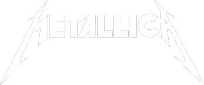

A Metallica amerikai heavy metal zenekart James Hetfield és Lars Ulrich alapította 1981-ben Los Angelesben. Az utóbbi évtizedek egyik legsikeresebb együttese, az 1980-as és az 1990-es évek meghatározó zenekara. Első stabil felállása – Lars Ulrich dobos, James Hetfield énekes-gitáros, Cliff Burton basszusgitáros és Kirk Hammett gitáros – 1983-ra alakult ki. Az 1983-ban megjelent Kill ’Em All című első albumuk újszerű, agresszív stílusával lefektették a heavy metal alapjait. Az 1984-ben, illetve 1986-ban megjelent Ride the Lightning és Master of Puppets albumaikon lassabb, epikus hangvételű, összetettebb dalokkal bővítették zenéjüket. Az egyre népszerűbb zenekar 1986-os turnéján Cliff Burton közlekedési balesetben meghalt. A helyére került Jason Newsteddel felvett …And Justice for All tovább növelte népszerűségüket, és a „thrash metal nagy négyese” (Metallica, Megadeth, Slayer, Anthrax) közül ők lettek a legismertebbek.

A mainstream-áttörést az 1991-ben megjelent Metallica (Black Album) hozta el; ezen a korábbiaknál rövidebb, slágeresebb dalok foglaltak helyet. Ez máig a legsikeresebb albumuk, amely 2009 decemberében a Nielsen SoundScan adatai szerint a legkelendőbb album volt, és 16-szoros platinalemez. Kisebb szünet után 1996-ban, illetve 1997-ben megjelent Load és ReLoad című albumaik alternatív hangvétele megosztotta a rajongótábort. Ezután a fokozódó személyes ellentétek miatt Jason Newsted 2001-ben elhagyta a zenekart. A feloszlás küszöbére sodródott együttes 2003-ban tért vissza a St. Anger albummal, amely óriási vitákat váltott ki a rajongók és a kritikusok közt is. Az ekkori problémákat szemléltette a Some Kind of Monster dokumentumfilm, amit 2004-ben mutattak be a mozikban. A Robert Trujillo basszusgitárossal kiegészült együttes következő nagylemeze Death Magnetic címmel jelent meg 2008-ban. 2013-ban Metallica-Through the Never címen jelent meg első, Antal Nimród ötletei alapján készült filmjük. Világszerte több mint 200 millió albumot adtak el, ebből több mint 60 milliót az Amerikai Egyesült Államokban. Eddig kilencszer nyertek Grammy-díjat, és a VH1 100 Greatest Artists of Hard Rock listáján az ötödik helyre kerültek. Magyarországon eddig hatszor koncerteztek: 1988-ban, 1991-ben, 1993-ban, 1999-ben, 2010-ben és 2018-ban.